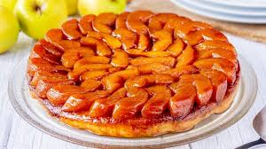
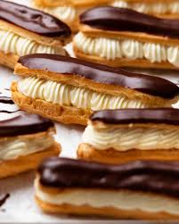
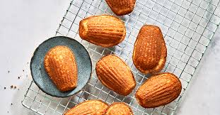
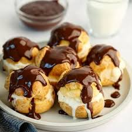
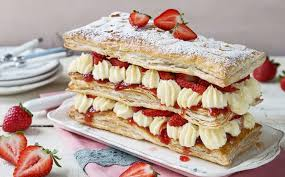
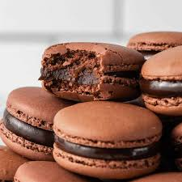
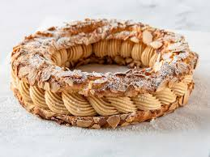
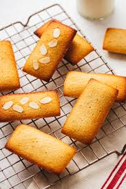
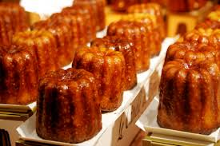

Crème Brûlée is a luxurious French dessert featuring a rich, creamy custard base infused with
vanilla. What makes it truly iconic is its crisp, caramelized sugar topping, which is torched to
perfection just before serving. The contrast between the smooth, velvety custard and the brittle
caramelized top creates a delightful texture combination that has made it a staple in fine dining
around the world.
Tarte tatin

Tarte Tatin is a caramelized upside-down apple tart with a story of happy accident behind its
creation. Apples are sautéed in butter and sugar until golden and tender, then topped with a buttery
pastry and baked. When inverted onto a plate, the glossy, caramel-coated apples take center stage,
offering a perfect balance of sweetness and tartness in every bite.Link to Tarte Tatin recipe !!
Éclair

The éclair is a classic French choux pastry shaped like a small cylinder, filled with luscious
cream—often vanilla, coffee, or chocolate—and topped with a smooth glaze. Its delicate pastry shell is
light yet resilient, holding in the creamy filling while providing a slight crispness. Éclairs are as
visually appealing as they are delicious, often seen in patisseries arranged in tempting rows.
Madeleines

Madeleines are small, shell-shaped sponge cakes known for their light, airy texture and buttery,
slightly lemony flavor. Their iconic scalloped form comes from the special pans used to bake them. Often
enjoyed with tea or coffee, madeleines have a simple elegance that has charmed generations and were even
immortalized in literature for their nostalgic qualities.
Profiteroles

Profiteroles are bite-sized choux pastries filled with whipped cream, pastry cream, or ice cream, often
served with a drizzle of chocolate sauce. Their airy pastry shell provides a light, crisp texture that
complements the richness of the filling. This dessert is a favorite at celebrations and restaurants
alike, admired for its combination of elegance, indulgence, and fun presentation.
Mille-Feuille

Mille-Feuille, also known as Napoleon, is a layered pastry made of alternating sheets of buttery puff
pastry and rich pastry cream. Some variations include a glaze or fondant topping. The multiple layers
create a delightful interplay of crispness and creaminess, offering a sophisticated dessert experience
that highlights the artistry of French patisserie.
Macarons

Macarons are colorful, delicate sandwich cookies made from almond flour, egg whites, and sugar, filled
with buttercream, ganache, or jam. Their smooth, glossy tops and signature ruffled “feet” are a
testament to precise French technique. Each bite offers a crisp exterior and a chewy interior, with
endless flavor possibilities ranging from classic raspberry to exotic pistachio or salted caramel.
Paris-Brest

Paris-Brest is a ring-shaped choux pastry filled with praline-flavored cream, inspired by a famous
bicycle race of the same name. Its crunchy, nutty topping complements the silky filling, offering a
sophisticated yet indulgent treat. This dessert combines elegance, history, and a rich flavor profile
that delights pastry lovers.
Financiers

Financiers are small, almond-based sponge cakes with a buttery, nutty flavor and a golden exterior.
Traditionally baked in rectangular molds, they have a delicate, moist texture inside. Often enjoyed with
tea or coffee, financiers are prized for their simplicity and refined elegance in French patisserie.
Cannelés

Cannelés are small, cylindrical pastries with a dark, caramelized crust and a soft, custardy interior
flavored with vanilla and rum. Originating from Bordeaux, their unique texture contrast makes them
instantly recognizable. Crispy on the outside yet tender inside, cannelés are often enjoyed as a snack
with coffee or as a refined finish to a meal.